Подборку собрали 8 ноября, прошедшие события скрыты. Свежая афиша — на главной
Места по типу · данные на 15 октября
Театры Москвы
53 театра в каталоге — драма, опера и балет, кукольные и гастротеатры, где ужин совмещён со спектаклем, например «Большой театр», «Ведогонь-театр» и «Калейдоскоп». В афише — 52 спектакля на ближайшие недели с датами и ссылками на официальные кассы. Билеты на премьеры уходят быстро, поэтому зови заранее.
- 53 места
- 39 планов
- 7 округов
Театры 40 из 53
Театральная пл., 1
Главная сцена страны. Билеты продаются на сайте театра — следите за открытием продаж.
Подробнее и маршрут: Большой театрПозвать сюда: Большой театр
Фото: Юрий Д.К., CC BY 4.0 · Wikimedia Commons
Зеленоград, ул. Юности, 17
Новое
Драмтеатр Зеленограда в здании после реставрации: комедии и исторические драмы, сильная труппа, удобные кресла и буфет. Билеты 600–2400 ₽.
Подробнее и маршрут: Ведогонь-театрПозвать сюда: Ведогонь-театр
Фото: Perituss, CC BY-SA 3.0 · Wikimedia Commons
Моховая ул., 15/1, стр. 1
Иммерсивный ужин-шоу в «Национале»: каждая подача — часть спектакля.
Подробнее и маршрут: КалейдоскопПозвать сюда: Калейдоскоп
Фото: A.Savin, CC BY-SA 3.0 · Wikimedia Commons
ул. Малая Дмитровка, 6
Новое
Театр в здании Купеческого клуба 1909 года. Здесь до сих пор идёт легендарная рок-опера «Юнона и Авось» — классика для романтичного вечера.
Подробнее и маршрут: Ленком Марка ЗахароваПозвать сюда: Ленком Марка Захарова
Фото: Никонико962, CC BY-SA 4.0 · Wikimedia Commons
Театральный пр., 1
Новое
«Дом Островского» на Театральной площади: здесь поставили все 48 его пьес. Большая классика в академичном исполнении — если хочется настоящего старого театра.
Подробнее и маршрут: Малый театрПозвать сюда: Малый театр
Фото: Никонико962, CC BY-SA 4.0 · Wikimedia Commons
наб. Тараса Шевченко, 29
Новое
Театр Фоменко в здании на склоне над Москвой-рекой, напротив Сити. Тёплые, лёгкие по интонации спектакли — отличный выбор для свидания; билеты лучше брать заранее.
Подробнее и маршрут: Мастерская Петра ФоменкоПозвать сюда: Мастерская Петра Фоменко
Фото: Gennady Grachev from Moscow, Russia, CC BY 2.0 · Wikimedia Commons
Петровский пер., 3
Новое
Театр Евгения Миронова в здании бывшего театра Корша 1885 года: громкие постановки с большими звёздами в главных ролях — билеты ловите заранее.
Подробнее и маршрут: Театр НацийПозвать сюда: Театр Наций
Фото: Mike1979 Russia, CC BY-SA 3.0 · Wikimedia Commons
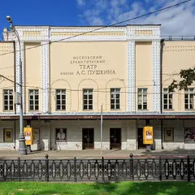
Тверской бул., 23
Новое
Театр в особняке бывшего Камерного театра Таирова: малиновый бархат, хрустальная люстра и анфилада фойе. Тверской бульвар для прогулки — прямо у входа.
Подробнее и маршрут: Театр ПушкинаПозвать сюда: Театр Пушкина
Фото: A.Savin, FAL · Wikimedia Commons
Покровский бул., Хохловская пл. (у Покровских ворот)
Новое
Деревянные ступени амфитеатра спускаются к расчищенному куску Белгородской стены XVI века. Отсюда легко уйти в переулки Ивановской горки — Хохловский и Колпачный.
Подробнее и маршрут: Хохловская площадьПозвать сюда: Хохловская площадь
Фото: T3ru, CC BY-SA 4.0 · Wikimedia Commons
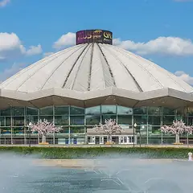
просп. Вернадского, 7
Огромный цирк на проспекте Вернадского со сменными манежами — от водного до ледового.
Подробнее и маршрут: Большой Московский циркПозвать сюда: Большой Московский цирк
Фото: A.Savin, Free Art License · Wikimedia Commons
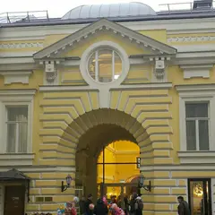
ул. Большая Никитская, 19/16
Новое
Опера Дмитрия Бертмана в старинной усадьбе на Большой Никитской: смелые постановки классики, оперетта и гала-концерты. Хороший способ впервые сходить на оперу вдвоём.
Подробнее и маршрут: Геликон-операПозвать сюда: Геликон-опера
Фото: Werigasep, CC BY-SA 4.0 · Wikimedia Commons
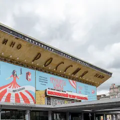
Пушкинская пл., 2
Новое
Театр Михаила Швыдкого в бывшем кинотеатре «Россия» на Пушкинской: зал на 1650 мест и собственные постановки — мюзиклы, комедии и даже рок-опера.
Подробнее и маршрут: Московский театр мюзиклаПозвать сюда: Московский театр мюзикла
Фото: Никонико962, CC BY-SA 4.0 · Wikimedia Commons
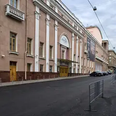
ул. Большая Дмитровка, 17
Опера и балет на Большой Дмитровке, в двух шагах от Большого.
Подробнее и маршрут: Музтеатр СтаниславскогоПозвать сюда: Музтеатр Станиславского
Фото: NVO, CC BY-SA 3.0 · Wikimedia Commons
Камергерский пер., 3
Легендарный Художественный театр в пешеходном Камергерском переулке.
Подробнее и маршрут: МХТ имени ЧеховаПозвать сюда: МХТ имени Чехова
Фото: A.Savin, Free Art License · Wikimedia Commons
Дашков пер., 5
Новое
Иммерсивный театр в особняке 1827 года: зрители сами бродят по всему дому и выбирают, за кем следить. В 2026-м вернулись «Вернувшиеся» по «Привидениям» Ибсена, 18+.
Подробнее и маршрут: Особняк Дашков 5Позвать сюда: Особняк Дашков 5
Фото: Svetlov Artem, CC BY 4.0 · Wikimedia Commons
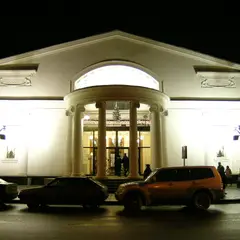
Чистопрудный бул., 19, стр. 1
Новое
Легендарный театр на Чистых прудах, в здании бывшего кинотеатра «Колизей» 1914 года. После спектакля — прогулка по бульвару вокруг пруда.
Подробнее и маршрут: СовременникПозвать сюда: Современник
Фото: Джус, CC BY 3.0 · Wikimedia Commons
Спартаковская пл., 9/1
Новое
Театр Юрия Грымова в здании Хлебной биржи 1911 года в стиле модерн. Эффектные постановки: Грымов часто сам придумывает сценографию, свет и музыку. Три зала.
Подробнее и маршрут: Театр «Модерн»Позвать сюда: Театр «Модерн»
Фото: Никонико962, CC BY-SA 4.0 · Wikimedia Commons
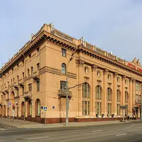
Ленинградский просп., 32/2
Цыганский театр с песнями и танцами, теперь в новом здании на Ленинградском проспекте.
Подробнее и маршрут: Театр «Ромэн»Позвать сюда: Театр «Ромэн»
Фото: A.Savin, Free Art License · Wikimedia Commons
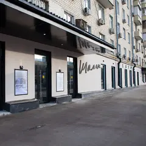
Новослободская ул., 23
Новое
Еврейский театр Олега Липовецкого теперь играет в бывшем Центре Мейерхольда у «Менделеевской». На лестницах — выставка об истории еврейского театра.
Подробнее и маршрут: Театр «Шалом»Позвать сюда: Театр «Шалом»
Фото: LaraBessmertnaya, CC BY-SA 4.0 · Wikimedia Commons
ул. Арбат, 26
Один из главных драматических театров Москвы — прямо на Арбате.
Подробнее и маршрут: Театр ВахтанговаПозвать сюда: Театр Вахтангова
Фото: A.Savin, Free Art License · Wikimedia Commons
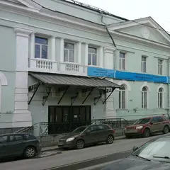
ул. Казакова, 8
Новое
Театр в бывшем железнодорожном депо у Курского вокзала, которым руководит Антон Яковлев. Две сцены, а до Винзавода и Artplay — короткая прогулка.
Подробнее и маршрут: Театр ГоголяПозвать сюда: Театр Гоголя
Фото: ivanich, CC BY 3.0 · Wikimedia Commons
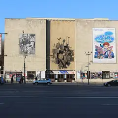
Садовая-Самотёчная ул., 3
Знаменитый театр кукол с часами-сказкой на фасаде, на Садовом кольце.
Подробнее и маршрут: Театр кукол ОбразцоваПозвать сюда: Театр кукол Образцова
Фото: tiger rus, CC BY 3.0 · Wikimedia Commons
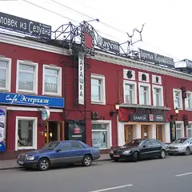
Земляной Вал, 76/21
Легендарный театр Любимова и Высоцкого на Таганской площади.
Подробнее и маршрут: Театр на ТаганкеПозвать сюда: Театр на Таганке
Фото: A.Savin, CC BY-SA 3.0 · Wikimedia Commons
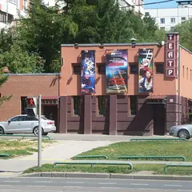
просп. Вернадского, 125
Культовый театр Валерия Беляковича в спальном районе у метро «Юго-Западная».
Подробнее и маршрут: Театр на Юго-ЗападеПозвать сюда: Театр на Юго-Западе
Фото: Dima41, CC BY-SA 3.0 · Wikimedia Commons
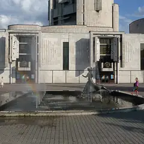
просп. Вернадского, 5
Детский музыкальный театр на Вернадского: опера и балет для всей семьи.
Подробнее и маршрут: Театр Наталии СацПозвать сюда: Театр Наталии Сац
Фото: El Pantera, CC BY-SA 2.5 · Wikimedia Commons
Суворовская пл., 2
Новое
Сталинский театр в форме пятиконечной звезды с одной из крупнейших сцен Европы — на неё могут выехать танки. Росписи Дейнеки в интерьерах и масштабные постановки.
Подробнее и маршрут: Театр Российской армииПозвать сюда: Театр Российской армии
Фото: tiger rus, CC BY 3.0 · Wikimedia Commons
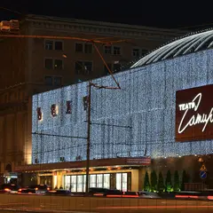
Триумфальная пл., 2
Новое
Комедийный театр у «Маяковской»: лёгкие смешные постановки для компании или непринуждённого свидания. Кроме большой сцены есть камерный «Чердак Сатиры».
Подробнее и маршрут: Театр СатирыПозвать сюда: Театр Сатиры
Фото: Andrey Korzun, CC BY-SA 4.0 · Wikimedia Commons
ул. Чаплыгина, 1А
Театр Олега Табакова — «Табакерка» на Чаплыгина.
Подробнее и маршрут: Театр ТабаковаПозвать сюда: Театр Табакова
Фото: mos.ru, CC BY 4.0 · Wikimedia Commons
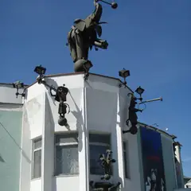
ул. Дурова, 4
Цирковые спектакли с животными в старинном театре у Суворовской площади.
Подробнее и маршрут: Уголок ДуроваПозвать сюда: Уголок Дурова
Фото: Simm, CC BY-SA 2.5 · Wikimedia Commons
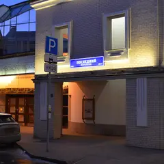
ул. Сретенка, 19
Новое
Театр, основанный Анатолием Васильевым, в здании по его замыслу: сцены «Манеж» и «Глобус» соединяет атриум под прозрачным сводом. Для любителей необычного театра.
Подробнее и маршрут: Школа драматического искусстваПозвать сюда: Школа драматического искусства
Фото: Brateevsky, CC BY-SA 4.0 · Wikimedia Commons
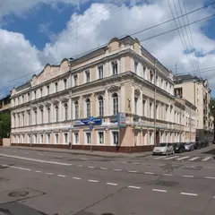
ул. Большая Никитская, 5
Гастротеатр Владимира Мухина: ужин-спектакль из многих подач вокруг икры.
Подробнее и маршрут: ikraПозвать сюда: ikra
Фото здания: NVO, CC BY-SA 3.0 · Wikimedia Commons
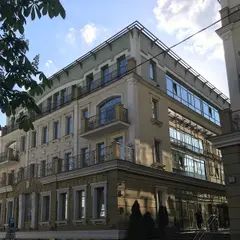
Подкопаевский пер., 4А
Ужин-спектакль с 360-градусными проекциями: семь подач — семь сцен.
Подробнее и маршрут: SVETПозвать сюда: SVET
Фото здания: Роман Балабин, CC BY-SA 3.0 · Wikimedia Commons
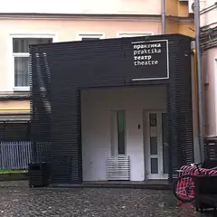
Большой Козихинский пер., 30
Камерный театр новой драмы: зал на 85 мест, актёры в паре метров от вас.
Подробнее и маршрут: Театр «Практика»Позвать сюда: Театр «Практика»
Фото: Valera N. Trubin, CC BY-SA 4.0 · Wikimedia Commons
Берсеневская наб., 20/2
Театр в Доме на набережной: спектакли, концерты и стендап.
Подробнее и маршрут: Театр эстрадыПозвать сюда: Театр эстрады
Фото: ATI1999, CC BY-SA 4.0 · Wikimedia Commons
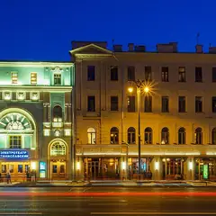
Тверская ул., 23
Смелый современный театр: спектакли идут на сцене, на лестнице и даже во дворе.
Подробнее и маршрут: Электротеатр «Станиславский»Позвать сюда: Электротеатр «Станиславский»
Фото: Stanislavsky Electrotheatre, CC BY-SA 4.0 · Wikimedia Commons
ул. Покровка, 38, стр. 1 (вход со двора с Лялина пер.)
Новое
Крошечный театр во дворе на Покровке: «Зойкина квартира» Булгакова с погружением в НЭП и «Атмосферник» — целый вечер в духе 1920-х.
Волгоградский просп., 121
Новое
Большая и малая сцены в пяти минутах от метро «Кузьминки»: классика и премьеры, в части спектаклей играет Сергей Безруков. Касса ежедневно 11–20.
Подробнее и маршрут: Губернская сцена МХАТ им. ГорькогоПозвать сюда: Губернская сцена МХАТ им. Горького
Малый Дровяной пер., 6
Новое
Спектакли с закрытыми глазами: историю слышишь, чувствуешь запахи и прикосновения. В «Судном дне» зрители — присяжные. Билеты от 3900 ₽.
ул. Большая Дмитровка, 6
Новое
Театр оперетты в историческом здании, где выступала Частная опера Мамонтова. Известен пышными мюзиклами «Монте-Кристо», «Граф Орлов» и «Анна Каренина».
Подробнее и маршрут: Московская опереттаПозвать сюда: Московская оперетта
ул. Покровка, 40Б (подъезд 2)
Новое
Камерный театр в усадьбе Голицыных-Давыдовых, где зрители втянуты в действие. Перед «Вием» — фуршет и бокал игристого. Билеты от 2800 ₽.


Готовые планы с этими местами 12 из 39
- Большой театр · Театр · м. Охотный ряд
- 4 минуты пешкомМетрополь · Ресторан в историческом отеле
Спектакль на главной сцене страны, а через Театральную площадь — ужин в парадном зале «Метрополя» под витражным куполом с фонтаном.
Открыть план: Большой театр и ужин под куполомПозвать сюда: Большой театр и ужин под куполом
Фото: Юрий Д.К., CC BY 4.0 · Wikimedia Commons
- Театр Вахтангова · Театр · м. Смоленская
- 15 минут пешкомПанорама · Панорамный ресторан
Спектакль в Театре Вахтангова на Арбате, потом минут пятнадцать пешком до Смоленской — и ужин на 23-м этаже, где за окнами высотка МИД и огни Сити.
Открыть план: Вахтангов и ужин на 23-м этажеПозвать сюда: Вахтангов и ужин на 23-м этаже
Фото: A.Savin, Free Art License · Wikimedia Commons
- Ведогонь-театр · Театр · Зеленоград — Крюково (МЦД-3)
- 12 минут пешкомGoodson bar · Коктейльный бар
Комедия в «Ведогонь-театре» с сильной труппой и билетами от 600 ₽, а потом хайболы и джин-тоник в бутылочке в Goodson bar.
Открыть план: Зеленоград: комедия и хайболыПозвать сюда: Зеленоград: комедия и хайболы
Фото: Perituss, CC BY-SA 3.0 · Wikimedia Commons
- Ведогонь-театр · Театр · Зеленоград — Крюково (МЦД-3)
- 16 минут пешкомZiamo · Ресторан
Спектакль в «Ведогонь-театре» после реставрации, а потом ужин в Ziamo под живой джаз или соул — осьминог и авторские десерты.
Открыть план: Зеленоград: театр и джаз за ужиномПозвать сюда: Зеленоград: театр и джаз за ужином
Фото: Perituss, CC BY-SA 3.0 · Wikimedia Commons
- Малый театр · Театр · м. Театральная
- 3 минуты пешкомНаука и жизнь · Круглосуточный бар
Большая классика в Малом театре, а в трёх минутах — круглосуточный бар «Наука и жизнь»: авторские коктейли и настолки — торопиться некуда.
Открыть план: Малый театр и бар без закрытияПозвать сюда: Малый театр и бар без закрытия
Фото: Никонико962, CC BY-SA 4.0 · Wikimedia Commons
- Театр Наций · Театр · м. Чеховская
- 7 минут пешкомMendeleev · Музыкальный бар
Громкая постановка в Театре Наций в здании театра Корша, а потом Mendeleev в кирпичных сводах бывшей типографии: в будни джаз и соул, в выходные DJ до 4 утра.
Открыть план: Театр Наций и бар в старой типографииПозвать сюда: Театр Наций и бар в старой типографии
Фото: Mike1979 Russia, CC BY-SA 3.0 · Wikimedia Commons
- Театр Пушкина · Театр · м. Тверская
- 5 минут пешкомThe Bix · Джаз-бар
Спектакль в Театре Пушкина с малиновым бархатом и хрустальной люстрой, а потом за зелёную дверь The Bix: около девяти вечера там начинается живой джаз, вход свободный.
Открыть план: Театр Пушкина и живой джазПозвать сюда: Театр Пушкина и живой джаз
Фото: A.Savin, FAL · Wikimedia Commons
- Мастерская Петра Фоменко · Театр · м. Москва-Сити
- 12 минут пешкомSixty · Панорамный ресторан
Тёплый спектакль в Мастерской Фоменко на склоне над рекой, а потом по мосту «Багратион» в Сити — ужин на 62-м этаже «Федерации», когда башни уже светятся.
Открыть план: Фоменко и ужин над СитиПозвать сюда: Фоменко и ужин над Сити
Фото: Gennady Grachev from Moscow, Russia, CC BY 2.0 · Wikimedia Commons
- Хохловская площадь · Площадь-амфитеатр · м. Китай-город
- 1 минута пешкомOn Sight · Кофейня
Ступени амфитеатра у куска стены XVI века, кривые переулки горки и кофе через дорогу на Покровке.
Открыть план: Хохловка и Ивановская горкаПозвать сюда: Хохловка и Ивановская горка
Фото: T3ru, CC BY-SA 4.0 · Wikimedia Commons
- Ленком Марка Захарова · Театр · м. Пушкинская
- 8 минут пешкомКафе «Пушкинъ» · Ресторан
В Ленкоме до сих пор играют «Юнону и Авось» — рок-оперу о любви, под которую стоит подгадать дату, а потом минут восемь пешком до кафе «Пушкинъ» с библиотекой и аптекарским залом.
Открыть план: «Юнона и Авось» и «Пушкинъ»Позвать сюда: «Юнона и Авось» и «Пушкинъ»
Фото: Никонико962, CC BY-SA 4.0 · Wikimedia Commons
- Музтеатр Станиславского · Театр оперы и балета · м. Чеховская
- 3 минуты пешкомTwins Garden · Ресторан высокой кухни
Опера или балет на Большой Дмитровке, а потом ужин в Twins Garden: две звезды Michelin, фермерские продукты и вид на центр с седьмого этажа.
Открыть план: Балет и две звездыПозвать сюда: Балет и две звезды
Фото: NVO, CC BY-SA 3.0 · Wikimedia Commons
- Большой театр · Театр · м. Охотный ряд
- 5 минут пешкомСавва · Ресторан высокой кухни
Спектакль на главной сцене страны, а после ужин в «Савве» в «Метрополе»: современная русская кухня Андрея Шмакова в пяти минутах пешком.
Открыть план: Большой и «Савва»Позвать сюда: Большой и «Савва»
Фото: Юрий Д.К., CC BY 4.0 · Wikimedia Commons
Спектакли в афише 12 из 52
Ленком Марка Захарова · м. Пушкинская · 16+
Трагикомедия Григория Горина о шуте при дворе Петра I, которому позволено говорить правду. Смешно и горько; Балакирев — Сергей Ююкин.
Подробнее: Шут БалакиревПозвать сюда: Шут БалакиревБилеты : Шут Балакирев (страница с билетами, откроется в новой вкладке)
Фото: Никонико962, CC BY-SA 4.0 · Wikimedia Commons
Гастротеатр «Калейдоскоп» · м. Охотный ряд · 18 000–25 000 ₽ · 12+
Гастрошоу у Манежной: два часа путешествия от пирамид Гизы до садов Семирамиды, к каждому чуду — свой сет. Вариант для особого свидания.
Подробнее: 7 чудес светаПозвать сюда: 7 чудес светаБилеты : 7 чудес света (страница с билетами, откроется в новой вкладке)
Фото: A.Savin, CC BY-SA 3.0 · Wikimedia Commons
Театр эстрады · м. Кропоткинская · 1 800–20 000 ₽ · 16+
Мюзикл Михаила Миронова на песнях Александра Розенбаума — история длиною в жизнь. Играют почти каждый день до 29 ноября, в выходные дважды.
Подробнее: Вальс-бостонПозвать сюда: Вальс-бостонБилеты : Вальс-бостон (страница с билетами, откроется в новой вкладке)
Фото: ATI1999, CC BY-SA 4.0 · Wikimedia Commons
МДМ (Московский дворец молодёжи), Большой зал · м. Фрунзенская · от 1 100 ₽ · 12+
Музыкальная комедия на хитах Челентано и итальянской эстрады — лёгкая, как старые кинокомедии. По выходным есть дневные показы.
Подробнее: Всё будет Челентано!Позвать сюда: Всё будет Челентано!Билеты : Всё будет Челентано! (страница с билетами, откроется в новой вкладке)
Иммерсивный театр «Морфеус» · м. Павелецкая · 3 900–4 900 ₽ · 16+
Иммерсивная комедия с закрытыми глазами: семь зрителей попадают в Москву 1903 года с театральными интригами и кафе. Полтора часа, несколько сеансов в день.
Подробнее: Поезд, Чехов, два орлаПозвать сюда: Поезд, Чехов, два орлаБилеты : Поезд, Чехов, два орла (страница с билетами, откроется в новой вкладке)
Театр на Цветном · м. Трубная · 1 500–7 700 ₽ · 12+
Продолжение комедии «Мамма мимо!»: провинциальной труппе дают сутки на авангардного «Призрака оперы». Пародии на хиты и много смеха.
Подробнее: Призрак мюзикла, или Что опять не так?Позвать сюда: Призрак мюзикла, или Что опять не так?Билеты : Призрак мюзикла, или Что опять не так? (страница с билетами, откроется в новой вкладке)
Театр Маяковского, Основная сцена · м. Арбатская · 1 200–8 000 ₽ · 16+
Чехов у Дениса Хусниярова: старый профессор подводит итоги жизни. В главных ролях Михаил Филиппов и Евгения Симонова. 8 ноября в 18:00, 9 декабря в 19:00.
Подробнее: Скучная историяПозвать сюда: Скучная историяБилеты : Скучная история (страница с билетами, откроется в новой вкладке)
Мастерская Петра Фоменко, Новая сцена · м. Москва-Сити
Премьера Ивана Поповски по Достоевскому: фантасмагория о Фоме Опискине, подмявшем под себя целое имение. Больше четырёх часов с антрактом.
Подробнее: Село Степанчиково и его обитателиПозвать сюда: Село Степанчиково и его обитателиБилеты : Село Степанчиково и его обитатели (страница с билетами, откроется в новой вкладке)
Фото: Gennady Grachev from Moscow, Russia, CC BY 2.0 · Wikimedia Commons
Театр Вахтангова · м. Смоленская · от 1 500 ₽ · 16+
Озорная оперетта о скромной воспитаннице, которую тянет за кулисы: музыка, танцы и путаница. 31 декабря играют в 17:00.
Подробнее: Мадемуазель НитушПозвать сюда: Мадемуазель НитушБилеты : Мадемуазель Нитуш (страница с билетами, откроется в новой вкладке)
Фото: A.Savin, Free Art License · Wikimedia Commons
РАМТ, Большая сцена · м. Охотный ряд · 12+
Мюзикл Максима Дунаевского по Грину в постановке Алексея Бородина: Ассоль, Грэй и мечта, которая сбывается. Светлый вечер вдвоём.
Подробнее: Алые парусаПозвать сюда: Алые парусаБилеты : Алые паруса (страница с билетами, откроется в новой вкладке)
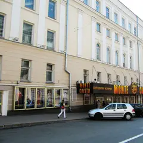
Московский театр оперетты · м. Охотный ряд · 1 000–9 100 ₽ · 12+
Самый известный российский мюзикл о мести графа по Дюма возвращается блоками: 10–15 ноября и 8–13 декабря. В выходные идёт дважды, в 14:00 и 19:00.
Подробнее: Монте-КристоПозвать сюда: Монте-КристоБилеты : Монте-Кристо (страница с билетами, откроется в новой вкладке)
Фото: Vladimir OKC, CC BY-SA 3.0 · Wikimedia Commons
Мастерская Петра Фоменко, Новая сцена · м. Москва-Сити
Летняя премьера Евгения Каменьковича: пьеса Ростана как одно большое признание в любви. Три с половиной часа с антрактом на Новой сцене.
Подробнее: Сирано де БержеракПозвать сюда: Сирано де БержеракБилеты : Сирано де Бержерак (страница с билетами, откроется в новой вкладке)
Фото: Gennady Grachev from Moscow, Russia, CC BY 2.0 · Wikimedia Commons
Как позвать
- Выбери план, место или событие — в карточке адрес, цены и маршрут в Яндекс Картах.
- Нажми «Позвать сюда» — соберётся приглашение-игра для свидания или голосование для компании.
- Отправь ссылку в любой мессенджер: тебе ответят, а компания отметит, куда и когда может. Бесплатно и без регистрации.